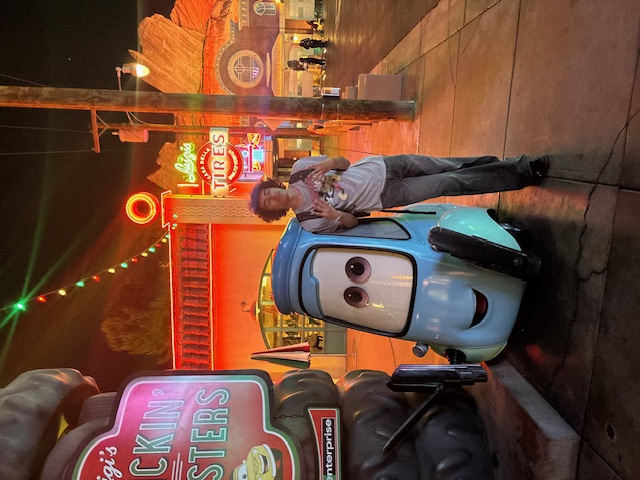

Gabriel Cuadra is a Fourth-year student at SJSU pursuing Data Analytics and Information Science. His love for sports, music, and statistics since he was kid still motivates him today with his current major work. As of now, he's pursuing mastery in Excel, Python, SQL, and more. He currently resides in the East Bay Area with a strong love for his area. In his free time, you can catch him spending time out with his friends, listening to new music, or playing video games. He's sociable and always enjoys meeting new people, so don't hesitate to reach out for anything.